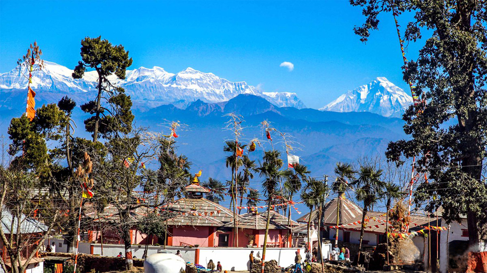
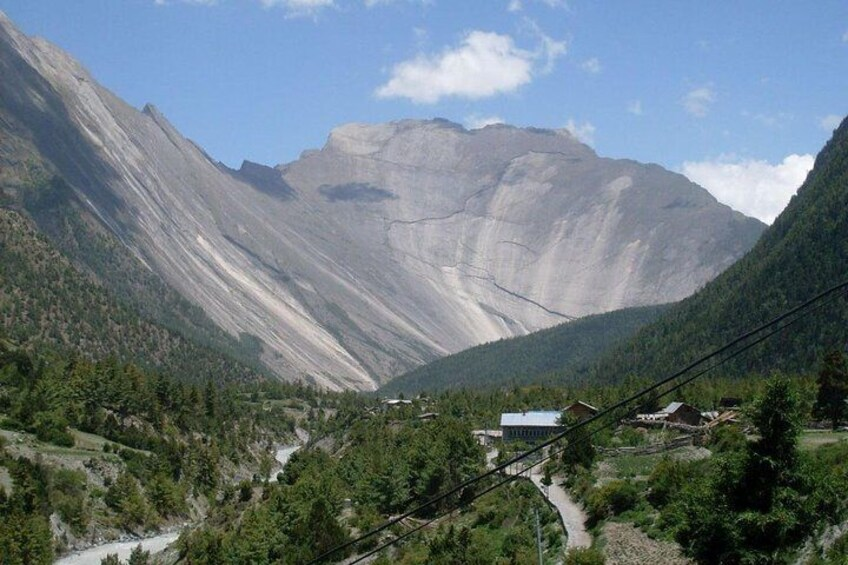
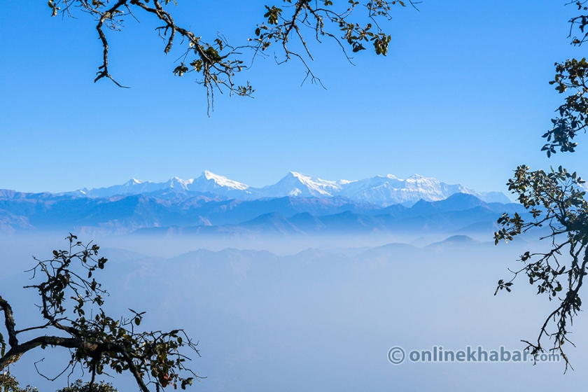
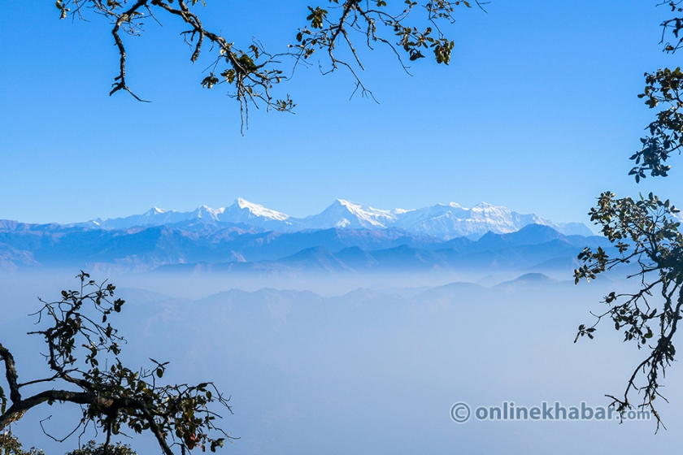
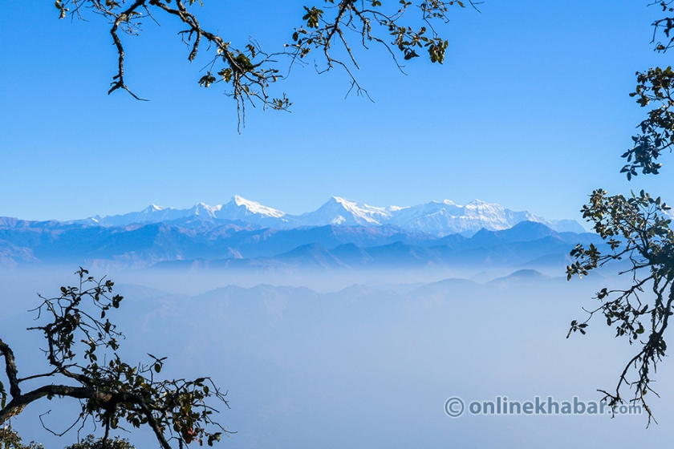

I have done many trips but my most favorite and memorable trip in these was Swargadwari Temple Trip.swargadwari is a hilltop temple and pilgrimage site vin PYUTHAN district,NEPAL,
(The Gate of Heaven) commemorating the special role of cows in Hinduism. It is situated at an elvation of 2121 meter from sea level. I had gone to this trip on spring seasion wtyh my father and neighbours.
Let us know why this trip is one of the favroite trip in all trips and what is the speciality of Swargadwari:

Swargadwari
History Of Swargadwari Temple:
Swargadwari hold lots of belief among Hindu devotees, which have the special honor of the role of Cows in Hinduism. People of Pyuthan district believe Guru Maharaj Narayan Khatri often called Swami Hamsananda found the Swargadwari temple. In the earlier days, cow grazing was the main occupation of the people in the Pyuthan district. According to the traditional stories and locals, guru Maharaj dug the land and found curd mixed with rice and fire. Then he explained to the locals that the Pandavs buried these things. Then people decide to build a Temple in that places. The fire from the ground has been burning until now. Not only that the holy fire cures disorders aches in the body.
Another history of Swargadwari arises from the Rolpa. Narayan Gautama was a leprosy patient. He arrived at Swargadwari temple and started living there. He was also practicing yoga and meditation. After that, his leprosy was slowly cured. Therefore, he started the sacrificial fire on the full moon day on the month of Bishak, which is burning until today. People entitled Narayan Gautama as a yogi and he also establish an ashram to graze cows. The ashram has been home to more than 300 cows until today.
People also believe that there was a person named Swargadwari Mahapravu who was god-sent to restore and protect the Dharma in today’s world. He followed the footsteps of guru Maharaj. Therefore, he spent his entire life doing yoga and taking care of the cows. He even took his last breath on the very spot where guru Maharaj was buried.
Way of Transportaion:
Bhalubang (Daang)–Bhingri-Swargadwari
This route is the most visited route to Swargadwari. For this route, you will start your tour to Swargadwari from Bhalubang. Bhalubang is located on the western side of Butwal, which is 360km from Kathmandu. For this, you will easily get vehicles from the Mahendra Highway. After getting off at Bhalubang, you will find a public bus, which will directly take you to Swargadwari. Normally, vehicles cost from Bhalubang to Swargadwari is NRs. 250 to NRs 300.
Ghorahi (Dang) – Swargadwari:
Another road to Swargadwari temple is from Ghorahi to Swargadwari. This is a harder road, which takes about 7 to 8 hours. The trek begins from Kathmandu to Dang, which goes through a cement factory. The road is almost packed every day because of the trippers. Because of that, the road seems dusty and bumpy so you should prepare yourself for this. The bus will stop you right at the bus park in Dharmapani on the left side of the ashram. From here, you can explore the ashram. From the ashram, you will have to walk to bit.
Visiting Places:


Scenic Beauty
Swargadwari tour in itself provides the spectacular scenery of the Jhimruk and Madi from the top hill. In addition to this will also get the most stunning view of various high snow-capped mountains including Annapurna, Dhaulagiri, and Manaslu, and May more. His route to Swargadwari goes through the dense coniferous forest, which is full of beautiful Rhododendron and flowers during the spring season. Here are many small and big temples, ponds, and caves on the route that you can visit.
Batukas
They are the students who live in the ashram and learn spiritual training from the gurus. Batukas and gurus worship the temple every day following the holy rituals. The morning prayers and ariti are important so you must see them. Hundreds of the pandits perform the Hawan and carry out the ariti on the temple. The ritual flam inside the temple has been burning for ages, so Pujari put butter and gee into the fire with Vedic mantras. Local’s people and visitors do bhajans and kirtan on the temple daily. The ashram gives permission and arranges Lakh Batti, Rudri, and any other rituals on request. For these rituals, the ashram takes certain charges, rates for each ritual.
Gufa Mandir
The main temple where daily rituals and puja are carried out is the Gufa Mandir. The burning flame inside this temple. If you move uphill from the ashram there is a cave from where the Maha Guru is, travel to Madi valley. Inside the rhododendron, coniferous forest there is a temple of Siddha baba that you can visit. You can get to witness how the ashram has managed hundreds of cows inside it. In addition, the milk, ghee, and butter for the Hawan and ariti are bought from the ashram itself. The pujari of the temple believes that only pure ghee and butter do the ariti. There is a huge trace of land on the ashram where the cows often graze. You can get a magnificent view of the sunrise from the terraced land with high mount Annapurna and Dhaulagiri from here.

 
